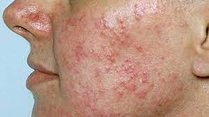

Rosacea

CAUSES
The cause of rosacea has not been determined. It may be a combination of hereditary and environmental factors. It is known that some things may make your rosacea symptoms worse. These include:
- eating spicy foods
-
eating items that contain the compound cinnamaldehyde, such as cinnamon, chocolate, tomatoes, and citrus
-
drinking hot coffee or tea
-
having the intestinal bacteria Helicobacter pylori
-
a skin mite called demodex and the bacterium it carries, Bacillus oleronius
-
the presence of cathelicidin (a protein that protects the skin from infection)
SYMPTOMS
- flushing and redness in the center of your face
-
visible broken blood vessels
-
swollen skin
-
sensitive skin
-
stinging and burning skin
-
dry, rough, and scaly skin
DIAGNOSIS
Your doctor can easily diagnose rosacea from a physical examination of your skin. They may refer you to a dermatologist who can determine whether you have rosacea or another skin condition.
TREATMENTS
Rosacea cannot be cured, but you can take steps to control your symptoms.
-
avoiding direct sunlight and wearing sunscreen
-
avoiding drinking alcohol
-
using lasers and light treatment to help with some severe cases of rosacea
-
microdermabrasion treatments to reduce thickening skin
-
taking eye medicines and antibiotics for ocular rosacea